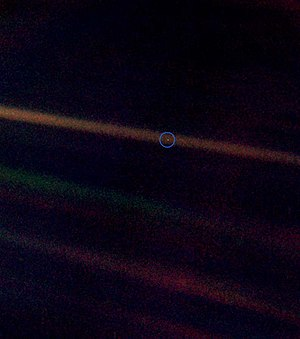

Carl Sagan
Carl Edward Sagan (Nova Iorque, 9 de novembro de 1934 — Seattle, 20 de dezembro de 1996) foi um cientista planetário, astrônomo, astrobiólogo, astrofísico, escritor, divulgador científico e ativista norte americano. Sagan é autor de mais de 600 publicações científicas e também de mais de vinte livros de ciência e ficção científica.
Foi durante a vida um grande defensor do ceticismo e do uso do método científico. Promoveu a busca por inteligência extraterrestre através do projeto SETI e instituiu o envio de mensagens a bordo de sondas espaciais, destinadas a informar possíveis civilizações extraterrestres sobre a existência humana. Mediante suas observações da atmosfera de Vênus, foi um dos primeiros cientistas a estudar o efeito estufa em escala planetária. Também fundou a organização não governamental Sociedade Planetária e foi pioneiro no ramo da exobiologia. Sagan passou grande parte da carreira como professor da Universidade Cornell, onde foi diretor do laboratório de estudos planetários. Em 1960 obteve o título de doutor pela Universidade de Chicago.
Sagan é conhecido por seus livros de divulgação científica e pela premiada série televisiva de 1980 Cosmos:Uma Viagem Pessoal, que ele mesmo narrou e coescreveu. O livro Cosmos foi publicado para complementar a série. Sagan escreveu o romance Contato, que serviu de base para um filme homônimo de 1997. Em 1978, ganhou o Prémio Pulitzer de Não Ficção Geral pelo seu livro The Dragons of Eden. Morreu aos 62 anos, de pneumonia, depois de uma batalha de dois anos com uma rara e grave doença na medula óssea (mielodisplasia).
Ao longo de sua vida, recebeu vários prêmios e condecorações pelo seu trabalho de divulgação científica. Sagan é considerado um dos divulgadores científicos mais carismáticos e influentes da história, graças a sua capacidade de transmitir as ideias científicas e os aspectos culturais ao público não especializado.
Formação e carreira científica
Carl Sagan frequentou a Universidade de Chicago, onde participou da Sociedade Astrônomica Ryerson (Ryerson Astronomical Society), graduando-se em artes, em 1954, e com honras especiais e gerais em ciências, em 1955. Obteve um mestrado em física em 1956 e, por fim, tornou-se doutor em astronomia e astrofísica, em 1960. Durante seu período na faculdade, Sagan trabalhou em um laboratório com o geneticista Hermann Joseph Muller. De 1960 a 1962, Sagan desfrutou de uma Miller Fellows (programa constitui o apoio dos bolsistas de pesquisa) da Universidade da Califórnia em Berkeley. De 1962 a 1968, trabalhou no Observatório Astrofísico Smithsonian em Cambridge, Massachusetts.
Simultaneamente, Sagan lecionou e pesquisou na Universidade Harvard até 1968, ano em que ele se juntou à Universidade Cornell, em Ithaca, estado de Nova Iorque. Em 1971, foi nomeado professor titular e diretor do laboratório de estudos planetários. De 1972 a 1981, foi diretor associado ao Centro de Radiofísica e Investigação Espacial de Cornell. Juntamente ao seu cargo de professor titular, Sagan ministrou um curso de pensamento crítico na Universidade Cornell até sua morte, em 1996.
Sagan esteve vinculado ao programa espacial estadunidense desde o seu começo. Desde a década de 1950, trabalhou como assessor da NASA, onde um de seus feitos foi dar as instruções aos astronautas participantes do programa Apollo antes de partirem à Lua. Sagan participou de várias missões que enviaram naves espaciais robóticas para explorar o Sistema Solar, preparando os experimentos para várias destas expedições. Sagan concebeu a ideia de incluir junto às naves espaciais que fossem abandonar o Sistema Solar uma mensagem universal que pudesse ser potencialmente compreensível por qualquer inteligência extraterrestre que a encontrasse. Sagan preparou a primeira mensagem física enviada ao espaço exterior: uma placa anodizada, acoplada à sonda espacial Pioneer 10, lançada em 1972. A Pioneer 11, que levava uma cópia da placa, foi lançada no ano seguinte. Sagan continuou refinando suas mensagens; a mensagem mais elaborada que ajudou a desenvolver e preparar foi o Disco de Ouro da Voyager, que foi enviada pelas sondas espaciais Voyager em 1977. Sagan se opunha frequentemente ao financiamento de sistemas de transporte espacial ou de estações espaciais no lugar de futuras missões robóticas.
Realizações científicas
As contribuições de Sagan foram vitais para o descobrimento das altas temperaturas superficiais do planeta Vênus. No início da década de 60, a ciência nada sabia sobre quais eram as condições básicas da superfície deste planeta, e Sagan enumerou as possibilidades em um artigo que posteriormente foi divulgado em um livro da Time intitulado Planetas. Em sua opinião, Vênus era um planeta seco e muito quente, em oposição ao paraíso temperado que outros haviam imaginado. Sagan investigou as emissões de rádio provenientes de Vênus e chegou à conclusão de que a temperatura superficial deste planeta deveria ser aproximadamente 500 °C. Como cientista visitante do Jet Propulsion Laboratory da NASA, participou das primeiras missões do programa Mariner a Vênus, trabalhando com o desenho e gestão do projeto. Em 1962, a sonda Mariner 2 confirmou suas conclusões sobre as condições superficiais do planeta.
Carl Sagan foi um dos primeiros a idealizar a hipótese de que uma das luas de Saturno, Titã, poderia abrigar oceanos de compostos líquidos em sua superfície, e que uma das luas de Júpiter, Europa, poderia abrigar oceanos de água subterrâneos, isto faria com que Europa fosse potencialmente habitável por formas de vida.O oceano de água subterrâneo de Europa foi posteriormente confirmado de forma indireta pela sonda espacial Galileu. O mistério da névoa avermelhada de Titã também foi resolvido com a ajuda de Sagan, cuja explicação foi que a névoa existia devido às moléculas orgânicas complexas em constante chuva na superfície da lua saturniana.
Em suma, Carl Sagan teve um papel significativo no programa espacial americano desde o seu início. Foi consultor e conselheiro da NASA desde os anos 1950, trabalhou com os astronautas do Projeto Apollo antes de suas idas à Lua e chefiou os projetos da Mariner e Viking, pioneiras na exploração do sistema solar que permitiram obter importantes informações sobre Vênus e Marte. Participou também das missões Voyager e da sonda Galileu. Foi decisivo na explicação do efeito estufa em Vênus e o descobrimento das altas temperaturas do planeta, na explicação das mudanças sazonais da atmosfera de Marte e na descoberta das moléculas orgânicas em Titã, satélite de Saturno. Ele também foi um dos maiores divulgadores da ciência de todos os tempos ao apresentar a série Cosmos em 1980.
Divulgação Científica
A habilidade de Sagan para transmitir suas ideias permitiu que muitas pessoas compreendessem o cosmos, simultaneamente enfatizando o valor da raça humana e a insignificância da Terra em relação ao universo. Em Londres, participou da edição de 1977 da Royal Institution Christmas Lectures. Foi apresentador, coautor e coprodutor, juntamente a Ann Druyan e Steven Soter, da popular série de televisão de treze episódios Cosmos: Uma Viagem Pessoal, produzida pela PBS, e que seguiu o formato da série de televisão A Escalada do Homem, apresentada por Jacob Bronowski. Sua série Cosmos abrangeu diversos temas científicos, que incluem desde a origem da vida até uma perspectiva de nosso lugar no universo. Ganhou o Prêmio Emmye o Prêmio Peabody. Foi transmitida em mais de 60 países e assistida por mais de 600 milhões de pessoas, atingindo a marca de programa mais visto na história do canal PBS. A revista Time publicou uma matéria de capa sobre Sagan pouco depois da estreia de Cosmos, referindo-se a ele como "o criador, autor principal e apresentador-narrador da nova série de televisão aberta Cosmos, sob o controle de sua nave da fantasia".
Sagan defendeu a busca por vida extraterrestre, convidando a comunidade científica a utilizar radiotelescópios para procurar por sinais provenientes de formas de vida extraterrestre potencialmente inteligentes. Sagan foi tão persuasivo que, em 1982, conseguiu publicar na revista Science uma petição em defesa do projeto SETI assinado por quase 70 cientistas, incluindo sete ganhadores do Prêmio Nobel, causando uma grande aceitação de um campo tão controverso. Sagan também ajudou o Dr. Frank Drake a preparar a mensagem de Arecibo, uma sequência de sinais de rádio dirigidas ao espaço enviadas através do radiotelescópio de Arecibo em 16 de novembro de 1974, destinada a informar sobre a existência da Terra a possíveis extraterrestres.
Sagan escreveu uma sequência ao livro Cosmos, chamado Pálido Ponto Azul, que entrou na lista dos livros mais vendidos de janeiro no The New York Times, em 1995. Em janeiro de 1995, Sagan apareceu no programa de Charlie Rose, na PBS.Também foi conhecido pela sua posição a favor do ceticismo científico e contra as pseudociências, como sua refutação ao caso de abdução de Betty e Barney Hill.
Cosmos
Cosmos foi uma série de TV realizada por Carl Sagan e sua esposa Ann Druyan, produzida pela KCET e Carl Sagan Productions, em associação com a BBC e a Polytel International, veiculada na PBS em 1980. A série Cosmos é um dos mais formidáveis exemplos da amplitude e eficácia que a divulgação científica pode atingir por meios audiovisuais, quando servida por uma personalidade carismática como Carl Sagan e por meios técnicos adequados.
A série se destaca por seu uso inovador de efeitos especiais, que permitem a Sagan percorrer ambientes que são, na verdade, maquetes, e não cenários completos. A trilha sonora inclui trechos de música fornecidos pelo compositor grego Vangelis, como Alpha, Pulstar e Heaven and Hell Part 1 (o último movimento serve como tema central da série, e é diretamente referenciado pelo título do quarto episódio). Ao longo das 13 horas da série, muitas faixas de vários álbuns dos anos 1970 são usadas, como Albedo 0,39, Meddle, Spiral, Ignacio, Beaubourg e China. O sucesso mundial da série colocou a música de Vangelis nas casas de muitos e chamou a atenção de um público global.
Cosmos esteve indisponível por muitos anos após seu lançamento inicial devido a problemas de direitos autorais com a trilha sonora, até ser lançado em 2000 em DVD com legendas em sete idiomas e som 5.1 remasterizado incluídos, assim como uma faixa alternativa de novas músicas e efeitos sonoros. Em 2005, o The Science Channel retransmitiu a série para seu 25º aniversário, com efeitos computadorizados e filmagens atualizadas, som digital e informações sobre descobertas científicas relevantes nos 25 anos passados. Apesar de ser exibido novamente no Science Channel, o tempo total para os 13 episódios originais (780 minutos) foi reduzido em 25% para 585 minutos (45 minutos por episódio), a fim de abrir espaço para comerciais.
No Brasil, a série foi exibida pela primeira vez pela Globo entre 22 de agosto e 14 de novembro de 1982, aos domingos depois do Fantástico, apresentada então pelo ator e dublador Reynaldo Gonzaga, mas com Carl Sagan sendo dublado por Sílvio Navas. Posteriormente, em 2008, a série passou a ser exibida pelo canal TV Escola com nova dublagem de Sérgio Stern, feita através dos estúdios Synapse. O cientista brasileiro Marcelo Gleiser apresentou em 2006, no Fantástico, uma série denominada Poeira das Estrelas, um programa de divulgação científica feito nos moldes de Cosmos, segundo Gleiser, o nome de tal série foi dada graças a uma frase dita por Carl Sagan na série Cosmos dizendo que: "Todos nós somos poeira das estrelas", tal episódio da série de Sagan contava sobre estrelas, Gleiser remodelou tal frase dizendo no primeiro episódio de Poeira das Estrelas: "... uma vez o astrônomo americano Carl Sagan disse que somos todos 'Poeira das Estrelas'".
Pálido Ponto Azul
No dia 14 de fevereiro de 1990, tendo completado sua missão primordial, foi enviado um comando à Voyager 1 para se virar e tirar fotografias dos planetas que havia visitado. A NASA havia feito uma compilação de cerca de 60 imagens criando neste evento único um mosaico do Sistema Solar. Uma imagem que retornou da Voyager era a Terra, a 6,4 bilhões de quilômetros de distância, mostrando-a como um "pálido ponto azul" na granulada imagem.
Sagan escreveria mais tarde sobre a fotografia de maneira muito profunda no seu livro de 1994, Pálido Ponto Azul:
''Olhem de novo para esse ponto. Isso é a nossa casa, isso somos nós. Nele, todos que você ama, todos que você conhece, todos que já ouvimos falar, todo ser humano que já existiu, viveram suas vidas. O agregado de nossas alegrias e sofrimentos, milhares de religiões, ideologias e doutrinas econômicas, cada caçador e saqueador, cada herói e covarde, cada criador e destruidor da civilização, cada rei e plebeu, cada jovem casal apaixonado, cada mãe e pai, cada criança esperançosa, inventores e exploradores, cada educador, cada político corrupto, cada superestrela, cada líder supremo, cada santo e pecador na história da nossa espécie viveu ali, em um grão de poeira suspenso num raio de sol.
A Terra é um cenário muito pequeno em uma imensa arena cósmica. Pense nos rios de sangue derramados por todos aqueles generais e imperadores, para que, em sua glória e triunfo, eles pudessem se tornar os mestres momentâneos de uma fração desse ponto. Pense nas infindáveis crueldades infligidas pelos habitantes de um canto deste pixel aos quase indistinguíveis habitantes de algum outro canto. Quão frequentes as suas incompreensões, quão ávidos de se matarem e o quão fervorosamente eles se odeiam.
Nossas atitudes, nossa imaginária auto-importância, a ilusão de que temos uma posição privilegiada no Universo, é desafiada por este pálido ponto de luz.
O nosso planeta é um espécime solitário na grande e envolvente escuridão cósmica. Na nossa obscuridade - em toda essa vastidão, não há nenhum indício de que a ajuda possa vir de outro lugar para nos salvar de nós mesmos.
A Terra é o único mundo conhecido, até hoje, que abriga a vida. Não há mais algum - pelo menos no futuro próximo, para onde a nossa espécie possa emigrar. Visitar, pode. Assentar-se, ainda não. Gostando ou não, por enquanto, a Terra é onde temos de ficar.
Tem-se falado da astronomia como uma experiência criadora de humildade e construção de caráter. Não há, talvez, melhor demonstração das tolas e vãs soberbas humanas do que esta distante imagem do nosso miúdo mundo. Para mim, acentua a nossa responsabilidade para nos portar mais amavelmente uns para com os outros, e para protegermos e acarinharmos o pálido ponto azul, o único lar que nós conhecemos.''
Carl Sagan
Doença e falecimento
Dois anos depois de ser diagnosticado com mielodisplasia, e depois de se submeter a três transplantes de medula óssea provenientes de sua irmã, Carl Sagan morreu de pneumonia aos 62 anos de idade no Centro de Pesquisas do Câncer Fred Hutchinson de Seattle, Washington, em 20 de dezembro de 1996. Sagan foi enterrado no Lake View Cemetery, em Ithaca, Nova Iorque.
Premiações:
Carl Sagan recebeu diversos prêmios e homenagens de diversos centros de pesquisas e entidades ligadas à astronomia. A seguir, uma lista dos seus prêmios:
- Miller Research Fellows (1960 - 1962) do Instituto Miller
- Prêmio Klumpke-Roberts de 1974, concedido pela Sociedade Astronômica do Pacífico
- Prêmio do Projeto Apollo concedido pela NASA.
- Medalha da NASA por Excepcionais Feitos Científicos.
- Medalha da NASA por Serviço Público de Destaque.
- Prêmio Emmy de 1981, na categoria de Trabalho Individual de Destaque, por sua série Cosmos
- Prêmio da Academia Nacional de Ciências de 1994 (no caso, o Public Welfare Medal), o maior prêmio científico das Américas, por "distintas contribuições para o bem-estar da humanidade".
- Prêmio São Francisco: Crônica de Ficção Científica de 1998, pela sua novela Contato.
- Prêmio Hugo de 1998 de Melhor Apresentação Dramática pelo filme Contato.
- Posição 99 na lista de americanos mais importantes da história, de 5 de junho de 2005, na série The Greatest American, exibida no Discovey Channel.
- Membro do Salão da Fama de Nova Jersey desde 2009.
Premiações Póstumas:
- Cosmos
- Pálido Ponto Azul
- Bilhões e Bilhões
- Variedades da experiência científica: Uma visão pessoal da busca por Deus
- Contato
Principais Obras:
Data de Publicação de suas obras:
| Obra | Ano de Publicação |
|---|---|
| Cosmos | 1980 |
| Pálido Ponto Azul | 1994 |
| Bilhões e Bilhões | 1997 |
| Variedades da experiência científica: Uma visão pessoal da busca por Deus | 1985 |
| Contato | 1985 |
Premiações e Homenagens:
Carl Sagan recebeu diversos prêmios e homenagens de diversos centros de pesquisas e entidades ligadas à astronomia. A seguir, alguns de seus prêmios e homenagens:
Premiações
| Prêmios | Ano | Instituição |
|---|---|---|
| Prêmio Klumpke-Roberts | 1974 | Sociedade Astronômica do Pacífico |
| Prêmio Anual de Excelência Televisiva | 1981 | Universidade do Estado de Ohio |
| Humanista do Ano | 1981 | Associação Humanista Americana |
| Prêmio da Academia Nacional de Ciências de 1994 | 1994 | Academia Nacional de Ciências de 1994 |
| Prêmio Emmy de 1981, na categoria de Trabalho Individual de Destaque, por sua série Cosmos. | 1981 | Emmy |
Homenagens
O filme Contato, de 1997, baseado no livro homônimo de Sagan e finalizado após sua morte, possui nos créditos finais uma dedicatória a Carl Sagan.Também em 1997 foi inaugurado na cidade de Ithaca, estado de Nova York, o Carl Sagan Planet Walk, uma recriação do sistema solar na escala de um pé de comprimento, com uma extensão total de 1,2 km, desde o centro da zona chamada The Commons até o Sciencenter, um museu de ciência interativo, do qual Sagan foi um dos membros fundadores do conselho de assessores.
Em homenagem, o lugar de aterrissagem da nave não tripulada Mars Pathfinder foi rebatizado como Carl Sagan Memorial Station, em 5 de julho de 1997. O monumento exibe uma frase de Sagan: Seja por qualquer razão que eu esteja em Marte, estou encantado de estar aqui, e eu desejaria estar aqui com vocês. Além disto, o asteroide do cinturão de asteroides 2709 Sagan e a cratera marciana Sagan levam hoje seu nome.
A partir de 2009, várias organizações em prol do humanismo e do secularismo promovem a celebração do Carl Sagan's Day, em 9 de novembro (seu aniversário) de cada ano, e a ideia rapidamente se espalhou pelo mundo, inclusive no Brasil. Para celebrar este dia há o costume de organizarem-se eventos de astronomia, palestras com convidados ilustres, fazer feiras de ciência e outros eventos do gênero.